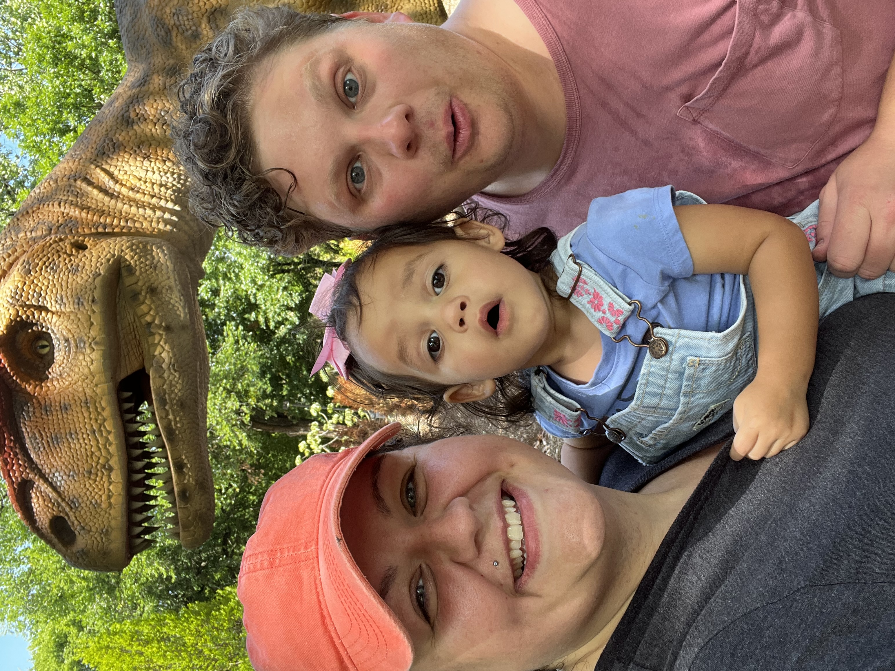
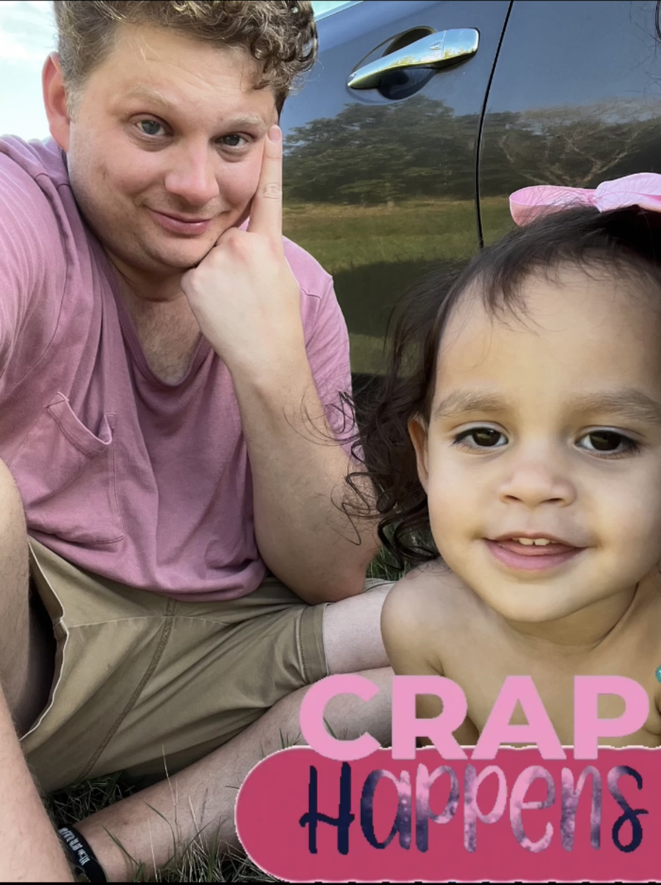

Family Memories vs Family Nightmares
So you want to take a fun, spur of the moment "family fun" trip to the zoo? Do it, but never underestimate a toddler with unmanaged bowels. It's all fun and games until someone has a blowout. Tires, that I could handle but a poopy toddler- thats next level. Here is a little inside scoop of all the fun you can have at the Tulsa Zoo while also maintaining a sick-ish, poopy toddler. Don't let the pictures fool you, she was having a blast both in and out of her diaper... The Parnets on the other hand couldn't find the nearest bathrooms quick enough.

Ross Geller Would Be Proud
Now the animals were the highlight of the entire trip until we took a little dino detour. Once we stepped back in time with the animatronics it was all over from there. The emotions ranged from scared, to excited, to "OH MY DOODNESS FREEEKINGG DINOSAURS". As you can see, it was a great time and we were all having a blast! We looked up, down and sideways to find all the "mommy" and "daddy" dinos we could. Most of all she wanted to see the non existent babies and was ultimately disapointed to see none of them but one had an entire family. "where de babies at? All the mommies and no babies?"
OH MY DOODNESS
Blowout on the Turnpike
After having a rather eventful time at the zoo, the turnpike is where we ultimately took a turn for the worst. We had to pull out a potty seat - yes an entire training potty we had forgotten was in the trunk - to let her take a dump on the side of the road. While nature called she enjoyed the scenic views of 80mph 18 wheelers zooming by and the fresh, hot breeze blowing on her face. After a 30 minute "stop and drop" we finally made it home an hour later, just as the sun was setting. That was hardly the end of the trip though. For the next four hours she talked non stop about dinosaurs- none of which was able to be understood until the word "dino" was mentioned. We were awoken at 5 am to the sound of a crying toddler begging to sleep in our bed. Once retrieving said toddler I was greated with "DINOSAURS!!" After realizing that this was not in fact "just a phase", rather a new found obsession, we then had to take a trip to target the following day to once again search high and low for a bucket of dinos. Needless to say the child is content in her winnings and is now a bonified dino girl.. see what I did there?
Illegal dumping on the Turnpike